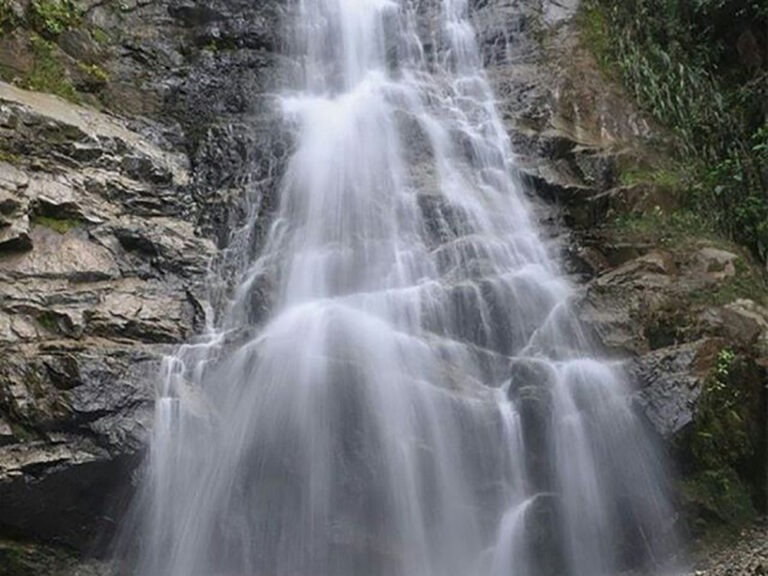

sitio turistico
Parque Nacional Podocarpus:Es una de las áreas naturales protegidas más importantes del Ecuador y de
toda la región amazónica. Su biodiversidad es impresionante, albergando cientos
de especies de plantas, aves, mamíferos e insectos, muchas de ellas endémicas.
El parque se extiende por zonas montañosas, ríos cristalinos, bosques
nublados y páramos.

Cascada La Poderosa:Esta cascada, ubicada cerca de la ciudad de Zamora, es una joya natural
rodeada de una exuberante vegetación tropical. Su caída de agua es imponente
y su entorno ofrece una atmósfera tranquila y refrescante. Es un destino muy
buscado por turistas que desean disfrutar de la belleza natural.Malecón de Zamora:El malecón es un espacio urbano diseñado para el disfrute de locales
y visitantes. Se ubica a lo largo de las orillas del río Zamora y combina naturaleza
con infraestructura moderna. Hay bancas, juegos infantiles, árboles, jardines bien
cuidados, esculturas y monumentos que reflejan la identidad cultural de la ciudad.
Mirador Reina del Cisne:Este mirador natural se encuentra en una zona elevada que permite
observar una vista panorámica de la ciudad de Zamora y de los verdes paisajes
amazónicos que la rodean.Es un sitio perfecto para apreciar la salida o la puesta del sol,
tomar fotografías y reflexionar en silencio con una vista impresionante.